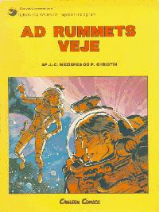

|

Par les chemins de l'espace |
Denne spesialutgivelsen inneholder fem av sju småhistorier på 16 sider som ble publisert i Pilote rundt 1970: Venskabens Fflumgluff Litt vill hopping i tid for å redde Slanes liv Asteroiden Tsirillitis Enkelte asteroider lever, og eter romtidsagenter... Universets Port Når en strander på en planet er man fortapt eller? Den triste planet Atomkatastrofer skjer ikke bare på jorden... Teknikens triumf Når teknikken skal vises til primitive bør de bli imponert, eller? De to (også 16 sider) som ikke er med her er gitt ut på finsk! Le Grand Collectionneur Den store samleren. I L&Vs galaktiske leksikon er det en referanse til denne historien. Fra det og min «pahat unet» hjulpet av min finsk-norsk norsk-finsk ordbok ser jeg at det handler om en hrm... samler. En labyrintplanet med romskipskirkegård og Valentin som ordner opp. Droles de Specimen Linda er med! Men jeg har ikke helt fått med meg hva det handler om ennå. Hvis det er noen som er i Bergen og har gode finskkunnskaper; kom og les med meg! :) I september/oktober kommer en ny og utvidet Par les Chemins de l'Espace ut i Frankrike. |
{kind=link}
{kind=link}